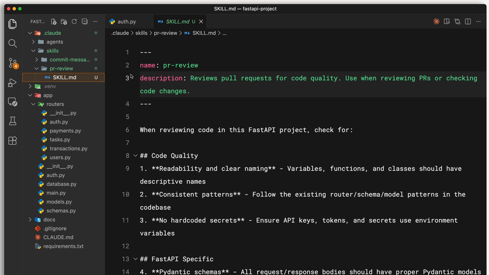
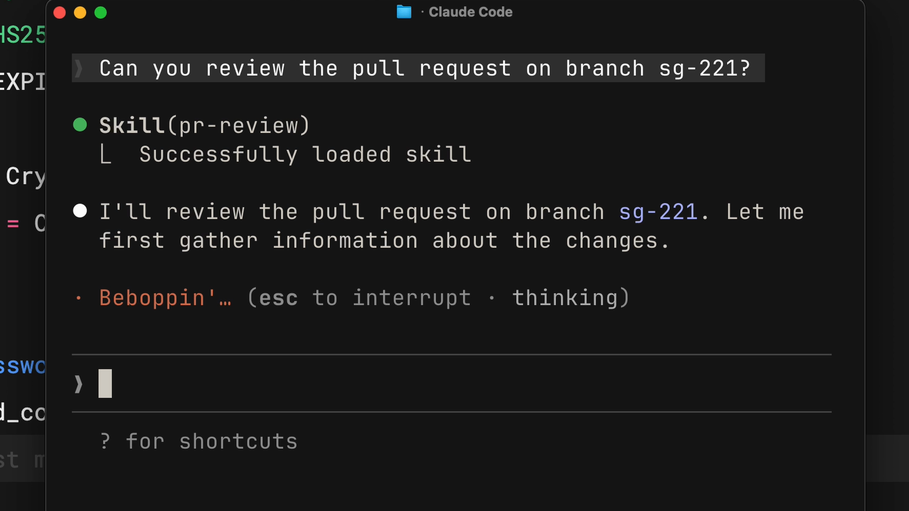

Что такое skills
Чему научитесь
Около 15 минут
К концу урока вы сможете:
- объяснить, что такое skill в Claude Code и как он подключается;
- показать, где лежат личные skills и skills проекта;
- отличить skill от
CLAUDE.mdи от slash-команды; - понять, для каких задач skill подходит лучше остальных способов настройки.
Что такое skills
Видео, около 3 минут
Видео показывает идею целиком: вместо того чтобы каждый раз заново объяснять, как смотреть pull request или как писать сообщение коммита, вы записываете инструкцию один раз. Claude Code сам подхватывает её, когда задача подходит.
Коротко
- Skill — папка с инструкциями. Главный файл называется
SKILL.md. В начале файла, во frontmatter, есть имя и описание. - Claude сравнивает ваш запрос с описаниями и включает те skills, которые подходят по смыслу.
- Личные skills лежат в
~/.claude/skillsи ездят с вами по всем проектам. Skills проекта лежат в.claude/skillsвнутри репозитория и достаются всем, кто его клонирует. - Skill грузится по делу.
CLAUDE.mdпопадает в каждый разговор. Slash-команду нужно вызвать самому. - Если вы уже третий раз объясняете Claude одно и то же, это кандидат в skill.
Из чего состоит skill
Каждый раз, когда вы заново рассказываете стандарты команды, формат ревью или шаблон коммита, вы тратите контекст на повтор. Skill записывает это знание один раз, а Claude применяет его, когда тема всплывает.
Описание — это критерий выбора. Вы просите «посмотри этот PR», Claude сопоставляет фразу с описаниями доступных skills и открывает подходящий. Ниже frontmatter идёт сама инструкция: чеклист, формат, ограничения.

pr-review внутри .claude/skills, сверху frontmatter, ниже чеклист.--- name: pr-review description: Reviews pull requests for code quality. Use when reviewing PRs or checking code changes. ---
Имя говорит, как skill называется. Описание говорит, когда его брать. Всё, что после второй черты ---, Claude читает уже после того, как skill выбран.
Где лежат skills
- Личные —
~/.claude/skillsв домашней папке. Стиль коммитов, как вы любите объяснения кода, ваш личный шаблон документации. На Windows этоC:/Users/<ваш-пользователь>/.claude/skills. - Проектные —
.claude/skillsв корне репозитория. Их коммитят вместе с кодом. Сюда кладут стандарты команды: как ревьюить, какие шрифты и цвета у продукта, как устроены доки.
Кто склонировал репозиторий, тот получил проектные skills без отдельной установки.
Skills, CLAUDE.md и slash-команды
У Claude Code несколько способов поменять поведение. Skill отличается тем, что он автоматический и привязан к задаче.
CLAUDE.mdзагружается в каждый разговор. «В этом проекте TypeScript только в strict mode» — это сюда.- Skill загружается, когда запрос совпал. Чеклист ревью не нужен, пока вы чините баг. Он появится, когда вы попросите ревью.
- Slash-команду нужно набрать явно, например
/pr-review. Skill Claude может включить сам, когда узнаёт ситуацию. При этом skill тоже можно вызвать вручную через/и имя каталога.
Когда запрос совпал, в терминале видно, что skill загрузился:

pr-review и пишет, что skill загружен.Когда skill уместен
- стандарты код-ревью команды;
- формат сообщений коммита;
- гайдлайны бренда;
- шаблоны определённого вида документации;
- чеклист отладки конкретного фреймворка.
Правило простое: если вы повторяете Claude одно и то же, это уже skill, который ещё не записан. Постоянные правила проекта оставьте в CLAUDE.md. Процедуру, которая нужна иногда и занимает много текста, вынесите в skill.
Вопросы к себе
- Какие инструкции вы повторяли Claude в последних сессиях? Что из этого сократил бы один skill?
- Какие стандарты команды стоит положить в репозиторий, чтобы их видели все, а не только вы?
Дальше
В следующем уроке вы соберёте первый skill и увидите, как Claude Code находит его, сопоставляет с запросом и загружает текст.
Оригинал урока: What are skills?